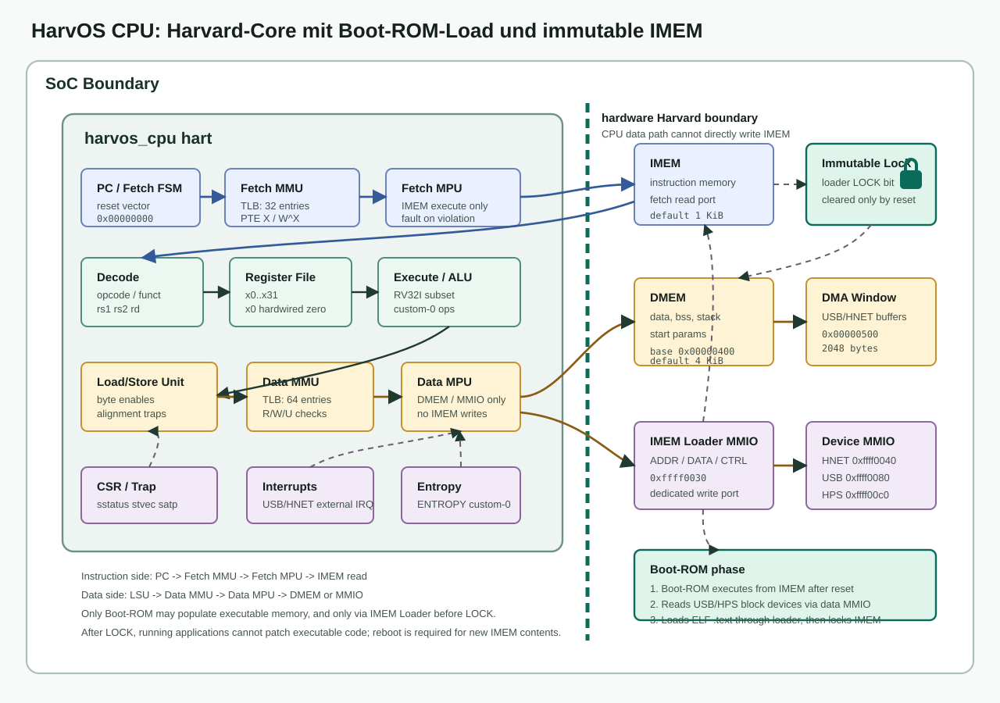

Speicher, MMU und Harvard-Schutz
HarvOS trennt Instruktionen und Daten bereits auf SoC-Ebene. Der Boot-ROM-Loader nutzt einen kontrollierten IMEM-Schreibpfad, waehrend laufende Anwendungen ausschliesslich DMEM und MMIO sehen.
Hardware-Trennung im Core

Adressraeume
| Bereich | Adresse / Parameter | Nutzung |
|---|---|---|
| IMEM | 0x00000000 bis 0x000003ff im aktuellen SoC-Default: IMEM_WORDS = 256, also 256 Worte / 1024 Byte. | Instruktionen, Boot-ROM und geladene ELF-Textsegmente. |
| DMEM | D_RAM_BASE = 0x00000400 bis 0x000013ff im aktuellen SoC-Default: DMEM_WORDS = 1024, also 1024 Worte / 4096 Byte. | Daten, BSS, Stack, Startparameter, HTTP-Bundle, DMA-Fenster. |
| DMA-Fenster | 0x00000500 bis 0x00000cff, 2048 Byte. | USB- und HNET-DMA-Transferbereich. |
| MMIO | 0xffff0000 bis 0xffff00ff. | Debug, IMEM-Loader, HNET, USB, HPS-Block. |
| Boot-ROM-App-Plan | BOOT_APP_LOAD_BASE = 0x00100000, BOOT_APP_STACK_TOP = 0x00178000 in der Boot-ROM-Software. | Geplanter App-Adressbereich fuer groessere Konfigurationen; die kleine RTL-Defaultkonfiguration muss dafuer vergroessert oder anders gemappt werden. |
IMEM_WORDS und DMEM_WORDS sind Synthese-/Testbench-Parameter aus
harvos_soc.sv, keine ISA-Maximalwerte. Die Zahl 256
beim IMEM bedeutet 256 32-Bit-Worte und damit 1024 Byte, nicht 256 Byte.
DMEM ist im aktuellen Default 4096 Byte gross.
Zugriffspipeline
Jeder Speicherzugriff laeuft in zwei Schutzstufen ab. Die MMU nimmt zuerst die virtuelle Adresse aus dem Fetch- oder Datenpfad entgegen, erzeugt daraus eine physische Adresse und bewertet die PTE-artigen Rechte. Danach prueft die MPU diese physische Adresse gegen die festen HarvOS-Regionen. Ein Zugriff muss beide Stufen bestehen, bevor IMEM, DMEM oder ein MMIO-Block antwortet.
Fetch: PC -> Fetch-MMU -> Fetch-MPU -> IMEM read
Load/Store: ALU addr -> Data-MMU -> Data-MPU -> DMEM/MMIO bus| Stufe | Aufgabe | Ergebnis |
|---|---|---|
| Adressbildung | PC fuer Fetch, rs1 + imm fuer Load/Store, clr_addr fuer CLRMEM. | Virtuelle Adresse und Zugriffstyp. |
| MMU | TLB-Lookup, regionaler Page-Walk, PTE-Flag-Pruefung, User-/Capability-Pruefung, W^X-Regel. | Physische Adresse, PTE-Debugwert, MMU-Allow oder MMU-Cause. |
| MPU | Feste physische Region pruefen: IMEM/I-ROM, DMEM, MMIO und Lock-Zustand. | Endgueltiges Allow, MMIO-Markierung oder Trap-Cause. |
| SoC-Decode | Adresse auf IMEM, DMEM, IMEM-Loader, HNET, USB, HPS-Block oder Debug-MMIO routen. | Datenwort, Byte-Write oder Default-Nullwert. |
MMU
Die CPU instanziiert zwei MMUs: eine fuer Fetch und eine fuer Daten.
Beide modellieren PTE-Flags V, R,
W, X, U, G,
A und D, aber der aktuelle Walker ist kein
vollstaendiger RISC-V-Sv32-Page-Table-Walker aus dem Speicher. Er bildet
die derzeitigen HarvOS-Regionen direkt auf physische Adressen ab und
cached diese Entscheidung im TLB. Das SATP_MODE_BIT ist
gesetzt; satp[29:22] dient als 8-Bit-ASID fuer den TLB.
| Pfad | TLB | Besonderheit |
|---|---|---|
| Fetch-MMU | 32 Eintraege | Nur Instruktionszugriffe; W^X-Verletzungen werden als Fetch-Fehler behandelt. |
| Data-MMU | 64 Eintraege | Load/Store-Pruefung, User/Supervisor-Policy, W^X-Schutz. |
MMU-Ablauf im Detail
- Die MMU bekommt
fetch,loadoderstore, die virtuelle Adresse,satp, den aktuellen Privilegienmodus undscaps. - Der TLB sucht mit virtueller Adresse und ASID aus
satp[29:22]. Bei Treffer kommen physische Adresse und Flags direkt aus dem TLB. - Bei Miss bewertet der aktuelle Page-Walker die Adresse gegen die festen HarvOS-Regionen. Gueltige Walk-Ergebnisse werden in den TLB gefuellt.
- Die MMU prueft
VundA. Fehlt eines davon, bleibtallow=0und die vom Walker gesetzte Cause wird weitergereicht. - Wenn
WundXgleichzeitig gesetzt sind, setzt die MMUwx_faultund verweigert den Zugriff. - Im User Mode muss das Mapping
Utragen. Wenn der Zugriff danach noch erlaubt ist, muss zusaetzlichscaps[0]fuer normale Speicherbereiche oderscaps[1]fuer MMIO gesetzt sein. - Fetch braucht
Xund darf nicht auf eine schreibbare Page zeigen. Load brauchtRund darf nicht aus einer executable Page lesen. Store brauchtW,Dund darf nicht in eine executable Page schreiben.
FENCE.I setzt im Core das TLB-Flush-Signal. Das ist im
aktuellen Design der sichtbare Synchronisationspunkt fuer geaenderte
Uebersetzungs-/Rechteentscheidungen; einen separaten I-Cache gibt es
derzeit nicht.
Aktuelles MMU-Regionenmodell
Der Page-Walker liest momentan keine Seitentabellen aus DMEM. Er ist
ein kleines Identitaetsmapping fuer die vorhandenen HarvOS-Regionen:
paddr = vaddr. Die Signale l1_index und
l0_index werden aus vaddr[31:22] und
vaddr[21:12] gebildet, dienen aber nicht als Speicherzugriff
auf eine echte zweistufige Page Table.
| Virtuelle Region | Zugriff | Walker-Flags | Ergebnis |
|---|---|---|---|
IMEM/I-ROM (vaddr < IMEM_WORDS * 4) | Fetch | V|R|X|A | Gueltig, identity-mapped. |
| IMEM/I-ROM | Load/Store | - | SCAUSE_HARVARD_VIOLATION. |
DMEM (D_RAM_BASE bis D_RAM_BASE + DMEM_WORDS * 4 - 1) | Load/Store | V|R|W|U|A|D | Gueltig, identity-mapped. |
| DMEM | Fetch | - | SCAUSE_HARVARD_VIOLATION. |
MMIO (MMIO_BASE bis MMIO_BASE + MMIO_BYTES - 1) | Load/Store | V|R|W|A|D | Gueltig fuer Supervisor; kein U-Flag. |
| Alle anderen Adressen | Fetch/Load/Store | - | Instruktions-, Load- oder Store-Access-Fault. |
Das zusammengesetzte Debug-PTE hat die Form
{paddr[31:12], 4'h0, flags}. Wenn kein TLB-Treffer und
kein gueltiges Walker-Ergebnis vorliegt, wird dieser Debugwert auf
0 gesetzt.
MPU und Locking
Die MPU setzt nach der MMU die groben physischen Grenzen durch. Sie ist
eine feste HarvOS-Regionenpruefung und nicht dasselbe wie RISC-V PMP:
Es gibt keine pmpcfg/pmpaddr-CSRs, keine
TOR/NA4/NAPOT-Adressmodi und keine priorisierte PMP-Eintragsliste.
Die erlaubten Bereiche kommen aus den SoC-Parametern fuer IMEM, DMEM
und MMIO.
| Zugriff | Erlaubt | Fehlerfall |
|---|---|---|
| Fetch | Nur IMEM/I-ROM (addr < IMEM_WORDS * 4) und nur wenn das MPU-Lock-Bit gesetzt ist. | Fetch aus DMEM ergibt SCAUSE_HARVARD_VIOLATION; andere Adressen ergeben SCAUSE_INST_ACCESS_FAULT. |
| Load/Store DMEM | DMEM von D_RAM_BASE bis D_RAM_BASE + DMEM_WORDS * 4 - 1. | Zugriff auf IMEM/I-ROM ergibt SCAUSE_HARVARD_VIOLATION. |
| Load/Store MMIO | Nur im Supervisor-Kontext; User-Mode-Zugriffe werden verweigert. | User-Mode-MMIO oder Adressen ausserhalb der Regionen ergeben Load-/Store-Access-Faults. |
CLRMEM | Nur Supervisor, nur DMEM, nur 4-Byte aligned. | MMIO wird fuer CLRMEM explizit abgelehnt. |
Das CSR smpuctl enthaelt in dieser Implementierung nur ein
Lock-Bit. Beim Reset ist es gesetzt, beim Lesen wird es immer sichtbar
gesetzt, und ein Schreibzugriff setzt den Lock-Zustand ebenfalls.
Zusaetzlich besitzt der IMEM-Loader seinen eigenen Lock-Zustand.
HARVOS_IMEM_LOADER_CMD_LOCK
akzeptiert der Loader keine neuen Instruktionswrites mehr bis Reset.
MPU-Ablauf im Detail
Die MPU sieht keine virtuellen Adressen mehr, sondern nur die physische Adresse aus der MMU. Sie entscheidet rein kombinatorisch anhand von Zugriffstyp, Privilegienmodus, Region und Lock-Bit.
in_iromist wahr, wennaddr < I_ROM_BYTES. Im SoC istI_ROM_BYTES = IMEM_WORDS * 4.in_dramist wahr, wennD_RAM_BASE <= addr < D_RAM_BASE + D_RAM_BYTES. Im SoC istD_RAM_BYTES = DMEM_WORDS * 4.in_mmioist wahr, wennMMIO_BASE <= addr < MMIO_BASE + MMIO_BYTES.- Fetch wird nur erlaubt, wenn
in_iromund das MPU-Lock-Bit gesetzt sind. - Load/Store wird fuer DMEM erlaubt. MMIO wird nur erlaubt, wenn der Zugriff nicht aus User Mode kommt. IMEM/I-ROM ist fuer Datenzugriffe immer verboten.
- Die MPU setzt das Signal
mmio, wenn die physische Adresse im MMIO-Fenster liegt. Der Datenpfad nutzt dieses Signal, um MMIO-Zugriffe vom normalen DMEM-Pfad zu trennen.
| Fall | MPU-Entscheidung | Cause bei Verbot |
|---|---|---|
| Fetch aus IMEM/I-ROM mit Lock | Erlaubt. | - |
| Fetch aus IMEM/I-ROM ohne Lock | Verboten. | SCAUSE_INST_ACCESS_FAULT. |
| Fetch aus DMEM | Verboten. | SCAUSE_HARVARD_VIOLATION. |
| Load/Store in DMEM | Erlaubt. | - |
| Load/Store in IMEM/I-ROM | Verboten. | SCAUSE_HARVARD_VIOLATION. |
| Supervisor-Load/Store in MMIO | Erlaubt und als MMIO markiert. | - |
| User-Load/Store in MMIO | Verboten. | SCAUSE_LOAD_ACCESS_FAULT oder SCAUSE_STORE_ACCESS_FAULT. |
| Load/Store ausserhalb aller Regionen | Verboten. | SCAUSE_LOAD_ACCESS_FAULT oder SCAUSE_STORE_ACCESS_FAULT. |
Trap-Prioritaet im Core
Der CPU-Zustandsautomat prueft Schutzfehler in einer festen Reihenfolge. Dadurch ist eindeutig, welche Trap-Ursache sichtbar wird, wenn mehrere Bedingungen gleichzeitig zutreffen.
| Pfad | Reihenfolge |
|---|---|
| Fetch | PC-Alignment, externer IRQ bei gesetztem sstatus[0], Fetch-MMU, Fetch-MPU, danach Instruktionsread. |
| Load | Funct3-Unterstuetzung, Alignment, Data-MMU, Data-MPU, Bus-Ready, danach Writeback. |
| Store | Funct3-Unterstuetzung, Alignment, Data-MMU, Data-MPU, Bus-Ready, danach Store-Abschluss. |
CLRMEM | Supervisor-Pruefung im Decode, dann pro Wort Alignment, Data-MMU, Data-MPU und explizites Verbot von MMIO. |
Boot-ROM-Payload-Layout
Das Boot-ROM berechnet Startparameter und Content-Bundle dynamisch
relativ zum hoechsten geladenen ELF-Segment. Dadurch werden groessere
.bss-Bereiche nicht mehr von statischen Parametern
ueberschrieben.
params_addr = round_up(highest_loaded_segment_end, 4096)
content_addr = params_addr + 4096
stack_guard = BOOT_APP_STACK_TOP - BOOT_APP_STACK_GUARD
require content_addr + BOOT_MAX_BUNDLE <= stack_guardApp-Startparameter
| Feld | Bedeutung |
|---|---|
app_id | Numerische Anwendungkennung; HarvTTP nutzt aktuell 1. |
service_mask | Aus YAML gelesene Service-Faehigkeiten. |
mem_base, mem_size | Geladener ELF-Speicherbereich. |
debug_flags | Debug-Konfiguration aus YAML. |
preloaded_content_vaddr, preloaded_content_size | Vorab vom Boot-ROM geladenes HTTP-Bundle. |
config_path | Pfad zur YAML-Datei auf dem Programm-USB. |
data_path | Pfad zum persistenten Datenordner auf dem Daten-USB. |
content_root_path | Bei HarvTTP: /confg/harvttp/httproot. |